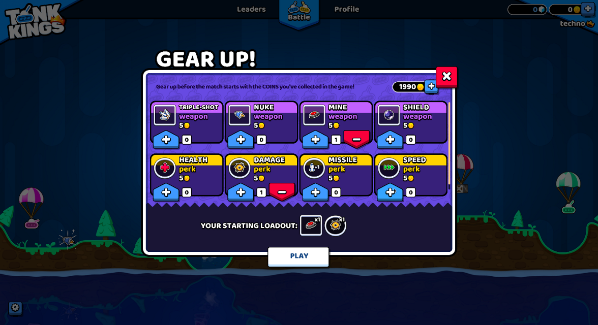
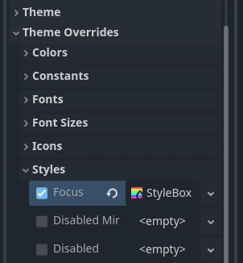

Giới thiệu về tùy biến giao diện GUI
Một trò chơi cần cung cấp cho người chơi giao diện người dùng rõ ràng, nhiều thông tin mà vẫn đẹp mắt. Dù các node Control có sẵn giao diện khá dùng được ngay từ đầu, luôn có chỗ cho sự độc đáo và tinh chỉnh theo từng trường hợp. Vì mục đích này, Godot engine có một hệ thống skinning (hay theming) cho GUI, cho phép bạn tùy chỉnh giao diện của mọi control trong giao diện người dùng, kể cả các control tùy chỉnh của bạn.
Đây là ví dụ về hệ thống này trong thực tế — một trò chơi có GUI khác hẳn so với theme UI mặc định của engine:

Màn hình "Gear Up!" trong Tank Kings, do Winterpixel Games cung cấp
Ngoài việc tạo giao diện độc đáo cho trò chơi, hệ thống này còn cho phép nhà phát triển cung cấp tùy chọn tùy chỉnh cho người dùng cuối, bao gồm cả cài đặt trợ năng. Theme UI được áp dụng theo kiểu phân tầng (tức là chúng lan truyền từ control cha xuống các con), nghĩa là cài đặt font hoặc điều chỉnh cho người mù màu có thể được áp dụng tại một nơi duy nhất và ảnh hưởng đến toàn bộ cây UI. Tất nhiên hệ thống này cũng có thể dùng cho mục đích gameplay: trò chơi dựa trên nhân vật anh hùng có thể đổi phong cách theo nhân vật người chơi đã chọn, hoặc bạn có thể tạo phong cách riêng cho từng phe trong dự án chơi theo đội.
Kiến thức cơ bản về theme
Hệ thống skinning được điều khiển bởi resource Theme. Mọi dự án Godot đều có sẵn một theme mặc định chứa các cài đặt được dùng bởi các control node có sẵn. Đây là thứ mang lại cho các control vẻ ngoài đặc trưng ngay từ đầu. Tuy nhiên, theme chỉ mô tả cấu hình, và việc dùng cấu hình đó theo cách cần thiết để tự hiển thị vẫn là nhiệm vụ của từng control. Điều này quan trọng cần nhớ khi triển khai các control tùy chỉnh của riêng bạn.
Ghi chú
Ngay cả trình chỉnh sửa Godot cũng dựa vào theme mặc định. Nhưng nó trông không giống một dự án Godot, vì nó áp dụng theme riêng được tùy chỉnh rất nhiều lên trên theme mặc định. Về nguyên tắc, cách này hoạt động y hệt như trong trò chơi của bạn, như được giải thích bên dưới.
Theme item
Cấu hình được lưu trong một theme gồm các theme item. Mỗi item có một tên duy nhất và phải thuộc một trong các kiểu dữ liệu sau:
Color
Một giá trị color, thường được dùng cho font và nền. Màu cũng có thể được dùng để modulate control và icon.
Constant
Một giá trị số nguyên, có thể dùng cho các thuộc tính số của control (chẳng hạn khoảng cách giữa các item trong BoxContainer), hoặc cho các cờ boolean (chẳng hạn việc vẽ các đường quan hệ trong Tree).
Font
Một resource font, được dùng bởi các control hiển thị văn bản. Font chứa hầu hết cài đặt kết xuất văn bản, ngoại trừ kích thước và màu. Ngoài ra, căn lề và hướng văn bản do từng control điều khiển.
Font size
Một giá trị số nguyên, được dùng cùng với font để xác định kích thước hiển thị văn bản.
Icon
Một resource texture, thường được dùng để hiển thị icon (ví dụ trên một Button).
StyleBox
Một resource StyleBox, tập hợp các tùy chọn cấu hình xác định cách hiển thị một panel UI. Điều này không chỉ giới hạn ở control Panel, vì stylebox được nhiều control dùng cho nền và lớp phủ của chúng.
Các control khác nhau sẽ áp dụng StyleBox theo cách khác nhau. Đáng chú ý nhất, stylebox
focusđược vẽ như một lớp phủ lên các stylebox khác (chẳng hạnnormalhoặcpressed) để stylebox nền vẫn hiển thị được. Điều này có nghĩa stylebox focus nên được thiết kế dạng đường viền hoặc hộp bán trong suốt, để phần nền của nó vẫn hiển thị.
Theme type
Để giúp tổ chức các item, mỗi theme được chia thành các type, và mỗi item phải thuộc về một type duy nhất. Nói cách khác, mỗi theme item được xác định bởi tên, kiểu dữ liệu và theme type của nó. Tổ hợp này phải là duy nhất trong theme. Ví dụ, không thể có hai item màu tên font_color trong type Label, nhưng có thể có một item font_color khác trong type LineEdit.
Theme Godot mặc định có sẵn nhiều theme type đã được định nghĩa, mỗi type cho một control node có sẵn sử dụng UI skinning. Ví dụ trên chứa các theme item thực tế có trong theme mặc định. Bạn có thể tham khảo mục Theme Properties trong tài liệu tham chiếu lớp của từng control để xem những item nào khả dụng cho nó và các lớp con của nó.
Ghi chú
Các lớp con có thể dùng theme item được định nghĩa cho lớp cha của chúng (Button và các lớp dẫn xuất của nó là ví dụ điển hình). Thực tế, mọi control đều có thể dùng mọi theme item của bất kỳ theme type nào nếu cần (nhưng vì sự rõ ràng và dễ dự đoán, chúng tôi cố tránh điều đó trong engine).
Điều quan trọng cần nhớ là với các lớp con, quá trình đó được tự động hóa. Mỗi khi một control có sẵn yêu cầu một theme item từ theme, nó có thể bỏ qua theme type, và tên lớp của nó sẽ được dùng thay thế. Ngoài ra, tên các lớp cha của nó cũng sẽ lần lượt được dùng. Điều này cho phép các thay đổi ở lớp cha, chẳng hạn Button, ảnh hưởng đến mọi lớp dẫn xuất mà không cần tùy chỉnh từng lớp một.
Bạn cũng có thể định nghĩa theme type của riêng mình, và tùy chỉnh thêm cả control có sẵn lẫn control của riêng bạn. Vì control có sẵn không biết gì về các theme type tùy chỉnh của bạn, bạn phải dùng script để truy cập các item đó. Mọi control node đều có một số phương thức cho phép lấy theme item từ theme đang được áp dụng cho chúng. Các phương thức đó nhận theme type làm một trong các đối số.
var accent_color = get_theme_color("accent_color", "MyType")
label.add_theme_color_override("font_color", accent_color)
Color accentColor = GetThemeColor("accent_color", "MyType");
label.AddThemeColorOverride("font_color", accentColor);
Để có thêm khả năng tùy chỉnh, các type cũng có thể được liên kết với nhau dưới dạng type variation. Đây là một trường hợp sử dụng khác của theme type tùy chỉnh. Ví dụ, một theme có thể chứa type Header được đánh dấu là variation của type cơ sở Label. Sau đó một control Label riêng lẻ có thể được đặt để dùng variation Header cho type của nó, và mỗi khi một theme item được yêu cầu từ theme, variation này sẽ được dùng trước mọi type khác. Điều này cho phép lưu nhiều preset theme item khác nhau cho cùng một lớp control node trong một resource Theme duy nhất.
Cảnh báo
Chỉ các variation có trong theme mặc định hoặc được định nghĩa trong theme tùy chỉnh của dự án mới được hiển thị làm tùy chọn trong Inspector dock. Bạn vẫn có thể nhập thủ công tên của variation được định nghĩa bên ngoài hai nơi đó, nhưng nên giữ tất cả variation trong theme của dự án.
Bạn có thể tìm hiểu thêm về cách tạo và dùng theme type variation trong bài viết riêng.
Tùy chỉnh một control
Mỗi control node có thể được tùy chỉnh trực tiếp mà không cần dùng theme. Đây được gọi là local override. Mọi thuộc tính theme trong tài liệu tham chiếu lớp của control đều có thể được ghi đè trực tiếp trên chính control đó, bằng Inspector dock hoặc script. Điều này cho phép thay đổi chi tiết ở một phần cụ thể của UI mà không ảnh hưởng đến bất cứ thứ gì khác trong dự án, kể cả các con của control này.

Local override ít hữu ích cho phần thẩm mỹ của giao diện người dùng, đặc biệt nếu bạn hướng tới sự nhất quán. Tuy nhiên, với các node bố cục thì chúng lại rất cần thiết. Các node như BoxContainer và GridContainer dùng hằng số theme để xác định khoảng cách giữa các con của chúng, còn MarginContainer lưu các lề có thể tùy chỉnh trong theme item của nó.
Mỗi khi một control có local override cho theme item, đó là giá trị mà nó sử dụng. Các giá trị do theme cung cấp sẽ bị bỏ qua.
Tùy biến một dự án
Mặc định, mỗi dự án dùng theme dự án mặc định do Godot cung cấp. Bản thân theme mặc định là cố định và không thể thay đổi, nhưng các item của nó có thể được ghi đè bằng một theme tùy chỉnh. Theme tùy chỉnh có thể được áp dụng theo hai cách: dưới dạng cài đặt dự án, và dưới dạng thuộc tính node trên khắp cây control node.
Có hai cài đặt dự án có thể điều chỉnh để ảnh hưởng đến toàn bộ dự án: GUI > Theme > Custom cho phép bạn đặt một theme tùy chỉnh cho toàn dự án, và GUI > Theme > Custom Font làm điều tương tự với font dự phòng mặc định. Khi một control node yêu cầu một theme item, theme tùy chỉnh của dự án (nếu có) sẽ được kiểm tra trước. Chỉ khi nó không có item đó thì theme mặc định mới được kiểm tra.
Điều này cho phép bạn cấu hình giao diện mặc định của mọi control Godot bằng một theme resource duy nhất, nhưng bạn có thể đi chi tiết hơn nữa. Mọi control node cũng có thuộc tính theme, cho phép bạn đặt một theme tùy chỉnh cho nhánh node bắt đầu từ control đó. Điều này có nghĩa control và tất cả các con của nó, rồi đến các con của chúng, sẽ kiểm tra theme resource tùy chỉnh đó trước khi quay về theme của dự án và theme mặc định.
Ghi chú
Thay vì thay đổi cài đặt dự án, bạn có thể đặt theme resource tùy chỉnh cho control node gốc nhất của toàn bộ nhánh UI để có hiệu quả gần như tương tự. Dù trong dự án đang chạy nó sẽ hoạt động như mong đợi, các scene riêng lẻ vẫn sẽ hiển thị bằng theme mặc định khi xem trước hoặc chạy trực tiếp. Để khắc phục, bạn có thể đặt cùng theme resource đó cho control gốc của từng scene.
Ví dụ, bạn có thể có một kiểu nút nhất định trong theme dự án, nhưng muốn nút bên trong một hộp thoại popup có giao diện khác. Bạn có thể đặt một theme resource tùy chỉnh cho control gốc của popup và định nghĩa kiểu khác cho nút trong resource đó. Miễn là chuỗi control node giữa gốc của popup và các nút không bị gián đoạn, các nút đó sẽ dùng kiểu được định nghĩa trong theme resource gần chúng nhất. Mọi control khác vẫn sẽ dùng kiểu từ theme toàn dự án và theme mặc định.
Tóm lại, với một control bất kỳ, quá trình tra cứu theme item của nó sẽ trông như sau:
Kiểm tra local override có cùng kiểu dữ liệu và tên.
Dùng type variation, tên lớp và tên các lớp cha của control:
Kiểm tra từng control bắt đầu từ chính nó và xem nó có đặt thuộc tính theme hay không;
Nếu có, kiểm tra theme đó để tìm item khớp cùng tên, kiểu dữ liệu và theme type;
Nếu không có theme tùy chỉnh hoặc nó không có item đó, chuyển sang control cha;
Lặp lại các bước a-c. cho đến khi đạt tới gốc của cây, hoặc gặp một node không phải control.
Dùng type variation, tên lớp và tên các lớp cha của control để kiểm tra theme toàn dự án, nếu có.
Dùng type variation, tên lớp và tên các lớp cha của control để kiểm tra theme mặc định.
Ngay cả khi item không tồn tại trong bất kỳ theme nào, một giá trị mặc định tương ứng với kiểu dữ liệu đó sẽ được trả về.
Ngoài control
Dĩ nhiên, theme là loại resource lý tưởng để lưu cấu hình cho thứ gì đó mang tính hình ảnh. Dù hỗ trợ theming được tích hợp sẵn vào control node, các node khác cũng có thể dùng chúng, giống như mọi resource khác.
Một ví dụ dùng theme cho thứ khác ngoài control là modulate sprite cho cùng một loại đơn vị thuộc các đội khác nhau trong game chiến thuật. Một theme resource có thể định nghĩa một tập hợp màu, và sprite (với sự trợ giúp của script) có thể dùng các màu đó để vẽ texture. Lợi ích chính là bạn có thể tạo các theme khác nhau dùng cùng các theme item cho đội đỏ, xanh dương và xanh lá, rồi hoán đổi chúng chỉ bằng một lần thay resource.